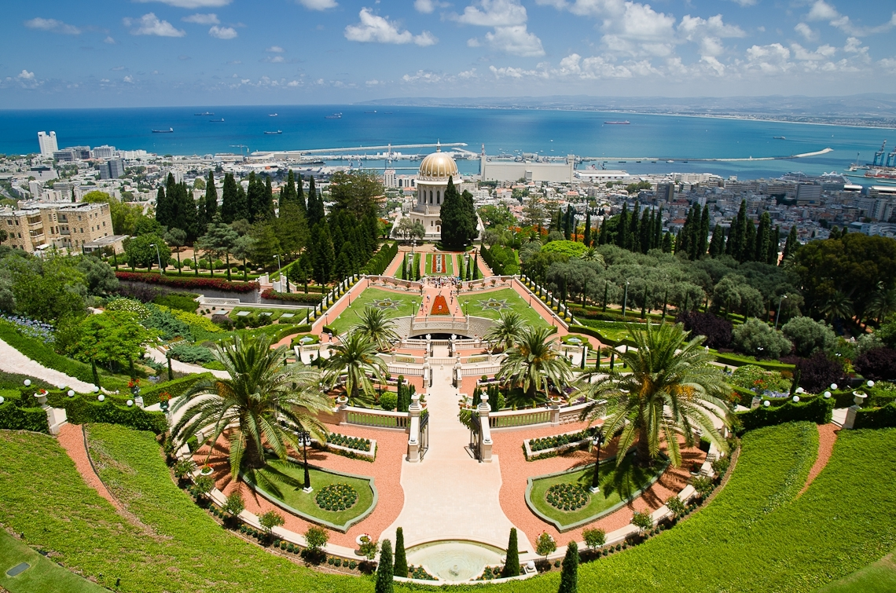

Израиль

О стране
Израиль – ближневосточная страна, находящаяся на стыке Азии, Африки и Европы. Этот край вобрал в себя запахи восточных пряностей и шарм европеской архитектуры, жаркие лучи раскаленного солнца Негева и открытость средиземноморского менталитета.

Израиль расположен в юго-западной части азиатского континента между Средиземным морем и сирийскими и аравийскими пустынями. Географическими границами страны служат Средиземное море на западе, долина Иордана на востоке, Ливанские горы на севере и Эйлатский залив на юге. Несмотря на малые размеры страны, ее климат и пейзажи разнообразны.

Туристу в Израиле несложно догадаться, что путешествует он не только по тропам страны, но и по страницам истории, высеченным на камнях крепостей крестоносцев, выстроенных у морских портов и служивших воротами в страну для мореплавателей, паломников и именитых путешественников. Страницы истории отпечатались и на просторах пустыни, по которой двигались племена кочевников, шли чужеземные армии, брели торговцы, ведущие караваны верблюдов, навьюченных тюками с товарами.

Этническая и религиозная мозаика Израиля поражает своим богатством; в стране есть множество культурных институтов и развлекательных центров. В Израиле – стране с богатым историческим прошлым, в святом месте для трех монотеистических религий, немало древних исторических памятников и религиозных святынь.

Большую часть года климат в Израиле приятный и вы можете путешествовать по стране 12 месяцев в году. Осенние и весенние месяца - месяца, в которые туристический поток самый высокий. Это связанно с тем, что погодные условия в это время наиболее подходят для путешествий. Температура в этот период в средним колеблется от +16 до +33 градусов, в зависимости от региона. Купальный сезон в Израиле продолжается круглый год: летом купаются в Средиземном море и Галилейском озере (Кинерет), а зимой — в Мертвом и Красном морях.

Приглашаем вас совершить увлекательное путешествие в страну памятников трёх мировых религий, изобилия морей с обустроенными на их берегах курортами и внушительным количеством исторических достопримечательностей сравнительно компактной площади государства. Мы искренне надеемся, что отдых станет для вас не только комфортным и доступным, но и полным по-настоящему ярких впечатлений.

Район Мертвого моря
Мертвое море – это самый соленый в мире бассейн – концентрация солей достигает тут 340 грамм на литр (в десять раз выше, чем в Средиземном море), вследствие чего в нем можно не только плавать, но и сидеть, не прилагая ни малейших усилий для того, чтобы оставаться на поверхности.
Туристы приезжают сюда со всего света для того, чтобы насладиться захватывающими пейзажами и ознакомиться с разнообразными достопримечательностями. Вокруг моря расположилась развитая туристическая промышленность. Здесь можно отправиться в пешие прогулки или прокатиться верхом на верблюдах, на джипах или велосипедах, или заняться снеплингом – спуском со скал по веревке. Манят и чудесные природные уголки – оазис Эйн Геди, Эйнот Цуким, Нахаль Аругот и Нахаль Давид, расположенные неподалеку, исторические достопримечательности – крепость Масада, Кумранские пещеры, где были найдены знаменитые свитки Мертвого моря.

Эйлат
Эйлат является зоной беспошлинной торговли. Отдых здесь удивителен именно потому, что он удачно сочетает в себе преимущества климата, разнообразие развлечений, уникальные пейзажи и интересные экскурсии, экзотику бедуинской кухни и традиции ресторанов, предлагающих европейские деликатесы, словом, Эйлат - это место, где не бывает скучно, холодно или неинтересно.
На протяжении многих лет Эйлат удерживает пальму первенства по популярности и имеет репутацию престижного зимнего курорта, идеального места, куда можно вырваться из холодной Европы, чтобы недельку-другую понежиться под зимним солнцем. Однако все новые и новые туристы открывают для себя, что летний отдых в Эйлате не менее приятен, чем зимний - здесь сухое тепло, кристально чистая морская вода, которую так любят поклонники дайвинга как в Израиле, так и зарубежом, длинные ряды прекрасных гостиниц с затейливым дизайном, а также беззаботный отдых для всей семьи.

Тель-Авив – Яффо
Тель-Авив, первый еврейский город Израиля, основанный в новое время и ставший экономическим и культурным центром страны, часто называют «городом, где жизнь никогда не останавливается».
Он расположен на 14-километровой полосе вдоль побережья Средиземного моря. На севере ее пересекает река Яркон, на востоке – река Аялон. Это оживленный город с множеством увеселительных заведений и бурной ночной жизнью. Каждый день сотни тысяч людей (местных жителей, а также туристов и тех, кто приезжает сюда на работу) снуют по Тель-Авиву, к вечеру заполняя ночные клубы, рестораны и пабы.

Иерусалим
Иерусалим, столица Израиля, единственный город мира, у которого более семидесяти названий, выражающих любовь и стремление к нему; город, изображенный на древних картах в центре мира и сохраняющий свое особое место в сердцах людей.
Иерусалим – город, переполняющий эмоциями, дарящий религиозные и духовные впечатления, радость и удовольствия, предлагающий интересные туры и занимательные приключения.
Наряду с важнейшими историческими и археологическими объектами, ценители культуры, искусства, театра, музыки, архитектуры и изысканной кухни смогут обнаружить в Иерусалиме много интересного, удивительного и существующего только здесь.

По всем вопросам свяжитесь с нами любым удобным способом:
E-mail: trohin.zh@yandex.ru
Телефон: +7 (977) 730 95 22
Соцсети: Вконтакте | Instagram | Telegram
Индивидуальный предприниматель Трохин Евгений Альбертович
ИНН 503613656680 / ОГРН ИП 315507400016056
город Москва, Щербинка ул. Юбилейная д.3а
Заполните анкету
Мы подберем идеальный тур, исходя из ваших желаний и эмоционального настроя.